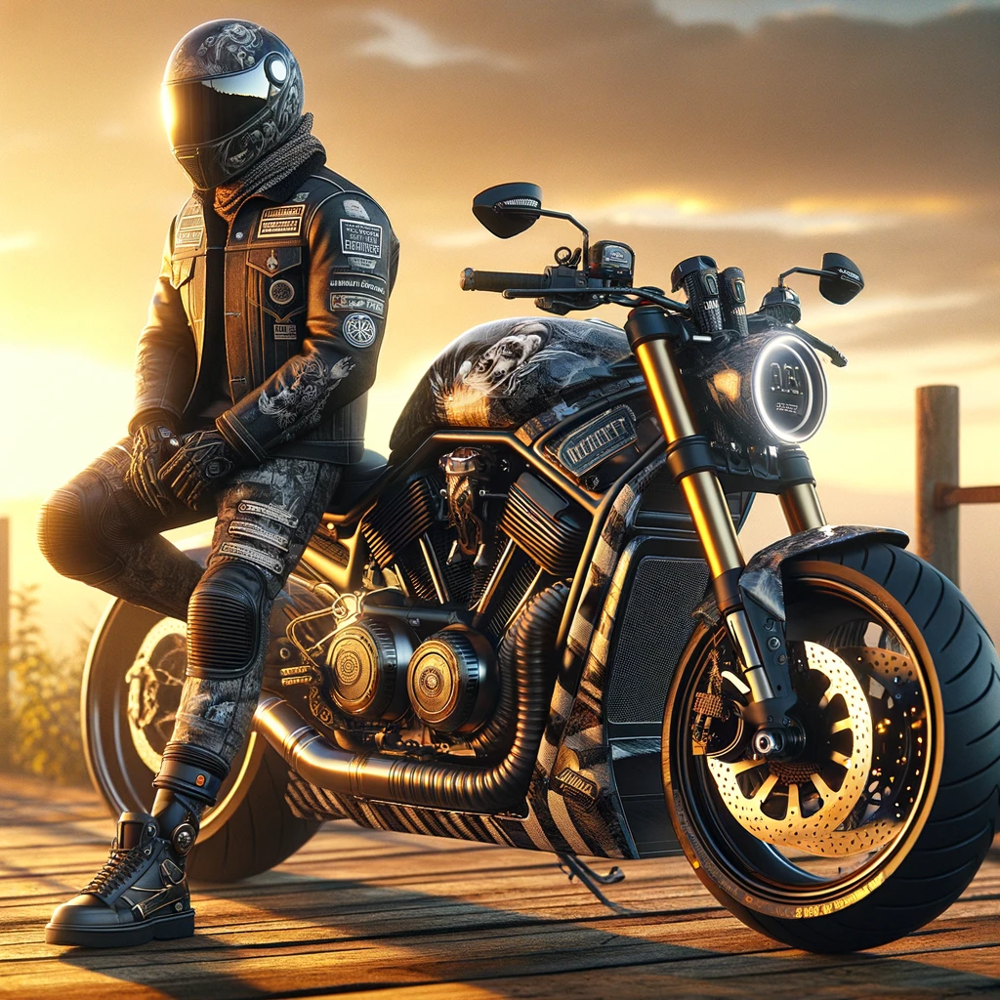
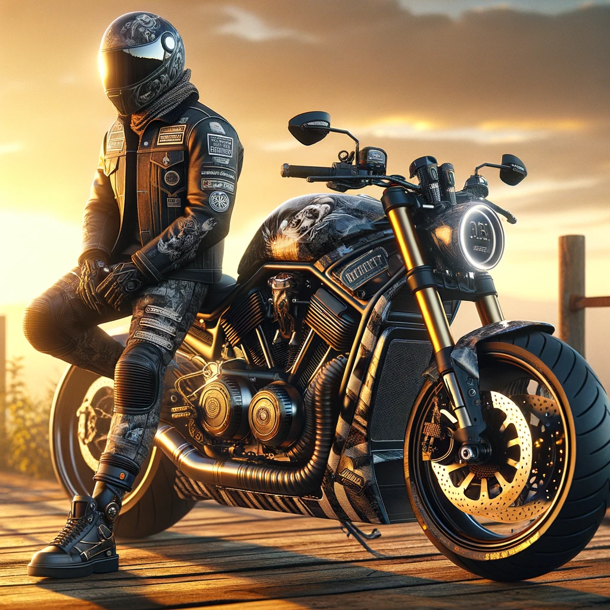

Zapraszamy na konkurs
Duet Doskonały
Czy Twój motocykl to nie tylko środek transportu, ale część Twojej osobowości? Jeśli tak, to właśnie Ciebie szukamy!
"Duet Doskonały" to unikalny konkurs, który celebruje wyjątkowe połączenie stylu motocyklisty z charakterem jego maszyny. Niezależnie od tego, czy jesteś fanem klasyków, chopperów, sportowych błyskawic czy motocykli terenowych, jeśli Twój motocykl i Ty tworzycie nierozerwalny duet, to jest to konkurs dla Ciebie!
Dlaczego warto wziąć udział?
- Wyraź Siebie: To szansa, aby pokazać swoją kreatywność i indywidualność.
- Cenne Nagrody: Na zwycięzcę czeka voucher na profesjonalną sesję zdjęciową i wyróżnienia w mediach motocyklowych.
- Spotkanie Pasjonatów: Doskonała okazja do spotkania innych entuzjastów motocykli i wymiany doświadczeń.
- Rozgłos: Zwycięzcy i uczestnicy będą promowani w mediach społecznościowych i na stronach poświęconych motocyklizmowi.
Kategorie Konkursowe
- Spójność Stylu: Jak dobrze Twój styl pasuje do Twojego motocykla?
- Unikalność: Pokaż nam, co czyni Ciebie i Twój motocykl jedynymi w swoim rodzaju.
- Kreatywność: Ocenimy oryginalność i innowacyjność w personalizacji i stylizacji.
Zgłoś się już dziś!
Rejestracja jest prosta. Wystarczy, że prześlesz nam zdjęcie siebie i swojego motocykla, imię, nr telefonu na mail konkursy@motoczwartek.pl. Przygotuj krótki opis, co czyni Wasz duet wyjątkowym i opowiedz swoją historię w czasie prezentacji.
Prezentacja odbędzie się podczas wydarzenia “Moto Rozrusznik†lub przed kamerą na parkingu (zależy to od ilości chętnych).
Regulamin Konkursu
Zapraszamy wszystkich pasjonatów motocykli do udziału w naszym unikatowym konkursie. Przed zgłoszeniem, prosimy o zapoznanie się z poniższym regulaminem:
- Organizator Konkursu
Celem konkursu jest promocja motocyklowego stylu życia poprzez prezentację unikalnych połączeń stylu motocyklistów i ich maszyn.
- Cel Konkursu
Celem konkursu jest promocja motocyklowego stylu życia poprzez prezentację unikalnych połączeń stylu motocyklistów i ich maszyn.
- Uczestnictwo
- Konkurs jest otwarty dla osób pełnoletnich, posiadających motocykl.
- Uczestnictwo w konkursie jest bezpłatne.
- Przez zgłoszenie do konkursu uczestnik wyraża zgodę na warunki regulaminu.
- Zasady Zgłoszeń
- Zgłoszenia przyjmowane są do 19.04.2024.
- Zgłoszenie powinno zawierać: imię uczestnika, zdjęcie siebie i swojego motocykla i kontakt.
- Zgłoszenia należy przesyłać na adres: konkursy@motoczwartek.pl.
- Kryteria Oceny
Jury oceni uczestników na podstawie: spójności stylu, unikalności, kreatywności oraz ogólnego wrażenia.
- Nagrody
Zwycięzcy w poszczególnych kategoriach otrzymają voucher na profesjonalną sesję zdjęciową.
- Ogłoszenie Wyników
Wyniki konkursu zostaną ogłoszone 20.04.2024r podczas uroczystej gali finałowej.
- Prawa Autorskie i Wizerunek
- Uczestnik zgłaszając się do konkursu wyraża zgodę na bezpłatne wykorzystanie przesłanych zdjęć i materiałów przez organizatora w celach promocyjnych.
- Uczestnik zgłaszając się do konkursu wyraża zgodę na przetwarzanie swoich danych osobowych dla potrzeb konkursu.
- Postanowienia Końcowe
- Organizator zastrzega sobie prawo do zmiany regulaminu z ważnych przyczyn.
- W sprawach nieuregulowanych postanowieniami regulaminu decyduje Organizator.
- W przypadku jakichkolwiek pytań lub wątpliwości prosimy o kontakt: konkursy@motoczwartek.pl.